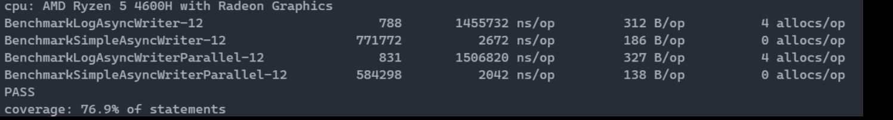

异步日志写实现
[TOC]
设计逻辑
内置 sync.pool 获取缓存，将 p 写入 bytes.Buffer，写入成功就将 buff 入队，然后使用轮询函数在循环中一直取队列里面的 buffer，使用刷写将缓存内容落盘，同时将缓存返回池中。在进程做优雅退出的时候，关联到异步写者，让其 for range 剩余的缓存，连续落盘； 落盘写函数逻辑：
- 要写入的字节流长度是否大于缓存剩下的部分？
- 是将当前写缓存内容刷写落盘，
- 否 直接追加到写缓存后面 异步轮询的 poller 函数会从队列里面取出 next writer，如果不是空的就直接执行缓存操作，这部分用 select 来做个定时操作，如果较长时间没有新的日志进来，就先把缓存里面有的数据落盘
go 代码实现
type FixSizeLargeBuff struct {
buf []byte
}
const Megabit = 1024 * 1024
func NewFixSizeLargeBuff() *FixSizeLargeBuff {
return &FixSizeLargeBuff{buf: make([]byte, 0, Megabit)}
}
func (f *FixSizeLargeBuff) Avail() int {
return Megabit - len(f.buf)
}
func (f *FixSizeLargeBuff) Reset() {
f.buf = f.buf[:0]
}
func (f *FixSizeLargeBuff) Append(p []byte) (int, error) {
if f.Avail() < len(p) {
return 0, fmt.Errorf("no avail free bytes")
}
f.buf = append(f.buf, p...)
return len(p), nil
}
type SimpleAsyncWriter struct {
data chan *FixSizeLargeBuff
curbuff *FixSizeLargeBuff
buffpool sync.Pool
wt io.Writer
lock sync.Mutex
wg sync.WaitGroup
ct *time.Ticker
last time.Time
active chan struct{}
}
func NewSimpleAsyncWriter(w io.Writer, limit int) *SimpleAsyncWriter {
ret := &SimpleAsyncWriter{
data: make(chan *FixSizeLargeBuff, limit),
buffpool: sync.Pool{New: func() any {
return NewFixSizeLargeBuff()
}},
wt: w,
lock: sync.Mutex{},
active: make(chan struct{}),
ct: time.NewTicker(1 * time.Second),
}
ret.addCount()
go ret.poller()
return ret
}
func (s *SimpleAsyncWriter) addCount() {
s.wg.Add(1)
}
func (s *SimpleAsyncWriter) Write(p []byte) (int, error) {
select {
case <-s.active:
return 0, ErrorWriteAsyncerIsClosed
default:
}
s.last = time.Now()
s.lock.Lock()
defer s.lock.Unlock()
select {
case <-s.active:
return 0, ErrorWriteAsyncerIsClosed
case <-s.ct.C:
if s.curbuff.Avail() > 0 && time.Since(s.last) > 5*time.Second {
s.data <- s.curbuff
s.curbuff = s.buffpool.Get().(*FixSizeLargeBuff)
}
default:
if s.curbuff == nil {
s.curbuff = s.buffpool.Get().(*FixSizeLargeBuff)
}
if len(p) > s.curbuff.Avail() {
s.data <- s.curbuff
s.curbuff = s.buffpool.Get().(*FixSizeLargeBuff)
}
}
if n, err := s.curbuff.Append(p); err != nil {
return n, err
}
return len(p), nil
}
func (s *SimpleAsyncWriter) poller() {
defer func() {
for i := len(s.data); i > 0; i-- {
d := <-s.data
s.wt.Write(d.buf)
}
if s.curbuff.Avail() > 0 {
s.wt.Write(s.curbuff.buf)
}
close(s.data)
s.data = nil
s.ct.Stop()
s.wg.Done()
}()
for {
select {
case <-s.active:
goto outer
case d := <-s.data:
s.wt.Write(d.buf)
d.Reset()
s.buffpool.Put(d)
}
}
outer:
}
func (s *SimpleAsyncWriter) Stop() {
s.active <- struct{}{}
s.wg.Wait()
}
基准测试
使用 law 的 benckmark 测试并给 BlackHoleWriter 类的 Writer 增加了时延模拟真实的落盘耗时，使用随机预先生成的字节数组队列来模拟真实负载填充，下面是 benckmark 测试的耗时

第一列是测试项-cpu 数，第二列是每秒钟执行的次数，第三列是耗时，第四列是每个操作分配的字节数(这个可能是我预生成的随机字节数组拷贝时产生的)，第五列是每个操作的分配次数
可以看到在 write 写操作平均耗时和平均分配的字节数来看，都有比较明显的优化，同时因为利用 defer 和 wait 机制联动，可以保证在调用 stop 是已经写入缓存的内容可以安全落盘，可以优雅推出，同步机制使用原生 channel 管道
特点
- 轻量级，代码简洁封装少，使用原生操作实现
- 多缓冲，使用sync.Pool 实现多级缓冲
- 安全并发， 虽然使用了互斥锁，但是仅用在write 方法上，对性能影响足够小
分布式一致性哈希 Golang 实现
[TOC]
哈希环定义
import "hash/crc32"
type Hash func(data []byte) uint32
// 用crc32
var defaultHashFn = crc32.ChecksumIEEE
// 哈希环
// 注意，非线程安全，业务需要自行加锁
type HashRing struct {
hash Hash
// 每个真实节点的虚拟节点数量
replicas int
// 哈希环，按照节点哈希值排序
ring []int
// 用来在新增节点时去重的
keys []string
// 节点哈希值到真实节点字符串，哈希映射的逆过程
nodes map[int]string
}
func NewHashRing(r int,fn Hash)*HashRing(){
if fn==nil{
fn = defaultHashFn
}
return &HashRing{
replicas: r,
hash: fn,
ring: make([]int,0,8*r),
keys: make([]string,0,8),
nodes: make(map[int]string,8),
}
}
方法实现
import (
"slices"
"sort"
"strconv"
)
func (h *HashRing) Add(nodes ...string) {
for _, k := range nodes {
exist := false
for _, val := range h.keys {
if val == k {
exist = true
}
}
if !exist {
h.keys = append(h.keys, k)
for i := 0; i < h.replicas; i++ {
hash := int(h.hash([]byte(strconv.Itoa(i) + k)))
h.ring = append(h.ring, hash)
h.nodes[hash] = k
}
}
}
slices.Sort(h.ring)
}
func (h *HashRing) Len() int {
return len(h.keys)
}
func (h *HashRing) Get(key string) string {
if h.Len() == 0 {
return ""
}
hash := int(h.hash([]byte(key)))
// Binary search for appropriate replica.
idx := sort.Search(len(h.ring), func(i int) bool { return h.ring[i] >= hash })
// Means we have cycled back to the first replica.
if idx == len(h.ring) {
idx = 0
}
return h.nodes[h.ring[idx]]
}
func (h *HashRing)Rest(){
h.ring = h.ring[:0]
h.keys = h.keys[:0]
clear(h.nodes)
}
- Add() 方法是用来创建节点环的,在一些节点退出后，可能需要reset 哈希环来再次重构哈希环
- Reset() 是用来重置hash环信息的
- Get() 就是用来获取 一致性哈希映射到的 节点的字符串上
文件多格式压缩
使用了一个压缩集合库来实现的这部分功能 compress
代码实现
package kit
import (
"fmt"
"io"
"os"
"path/filepath"
"strings"
"syscall"
gzip "github.com/klauspost/compress/gzip"
snappy "github.com/klauspost/compress/s2"
zip "github.com/klauspost/compress/zip"
zstd "github.com/klauspost/compress/zstd"
)
/* compress file func start */
// go build:+ linux
var osChown = os.Chown
type (
CompressType int
ZWriter interface {
io.WriteCloser
Flush() error
}
)
const (
GZIP_TYEP CompressType = iota
ZSTD_TYPE
SNAPPY_TYPE
ZIP_TYPE
)
var suffixs = [4]string{".gz", ".zst", ".snappy", ".zip"}
func chown(name string, info os.FileInfo) error {
f, err := os.OpenFile(name, os.O_CREATE|os.O_WRONLY|os.O_TRUNC, info.Mode())
if err != nil {
return err
}
f.Close()
stat := info.Sys().(*syscall.Stat_t)
return osChown(name, int(stat.Uid), int(stat.Gid))
}
func CompressLogFile(src, dst string, ct CompressType, rm bool) (err error) {
f, err := os.Open(src)
if err != nil {
return fmt.Errorf("failed to open log file: %v", err)
}
defer f.Close()
if dst == src {
dst += "out"
}
fi, err := os.Stat(src)
if err != nil {
return fmt.Errorf("failed to stat log file: %v", err)
}
if !strings.HasSuffix(dst, suffixs[ct]) {
dst += suffixs[ct]
}
if err := chown(dst, fi); err != nil {
return fmt.Errorf("failed to chown compressed log file: %v", err)
}
// If this file already exists, we presume it was created by
// a previous attempt to compress the log file.
zf, err := os.OpenFile(dst, os.O_CREATE|os.O_TRUNC|os.O_WRONLY, fi.Mode())
if err != nil {
return fmt.Errorf("failed to open compressed log file: %v", err)
}
defer zf.Close()
if ct == ZIP_TYPE {
w := zip.NewWriter(zf)
_, filename := filepath.Split(src)
temp, err := w.Create(filename)
if err != nil {
return err
}
if _, err := io.Copy(temp, f); err != nil {
w.Close()
return err
}
if err := w.Close(); err != nil {
return err
}
} else {
var zwriter ZWriter
switch ct {
case GZIP_TYEP:
zwriter = gzip.NewWriter(zf)
case SNAPPY_TYPE:
zwriter = snappy.NewWriter(zf, snappy.WriterSnappyCompat())
case ZSTD_TYPE:
zwriter, _ = zstd.NewWriter(zf)
}
defer func() {
if err != nil {
os.Remove(dst)
err = fmt.Errorf("failed to compress log file: %v", err)
}
}()
if n, err := io.Copy(zwriter, f); err != nil {
zwriter.Close()
return err
} else {
fmt.Printf("debug %d byets has beed write to dst path %s", n, dst)
}
zwriter.Flush()
if err := zwriter.Close(); err != nil {
return err
}
}
if err := zf.Close(); err != nil {
return err
}
if err := f.Close(); err != nil {
return err
}
if rm {
if err := os.Remove(src); err != nil {
return err
}
}
return nil
}
这部分主要是通过枚举加分支逻辑来处理不同压缩格式的处理，通过io.Copy 来做数据管道
雪花算法实现
雪花算法
0 - 0000000000 0000000000 0000000000 0000000000 0 - 0000000000 - 000000000000
符号位 时间戳 机器码 序列号
41位毫秒级时间戳，10位机器id 12位序列号 这个起始时间sEpoch其实不太重要，因为一般业务不会超过10年，这个69-(10~20)总还有50年的余量的，比较重要的一点就是如果一个毫秒内生产的序列id 过多就得等待到下一个毫秒窗口内
代码
package utils
// https://sourcegraph.com/github.com/sohaha/zlsgo/-/blob/zstring/snowflake.go
// 学习 zlsgo的总结
import (
"fmt"
"sync"
"time"
)
const (
sEpoch = 1474802888000 // 这个可以是业务上线的时间
TimeBase = int64(1000000)
MaxWorkID = 1<<5 - 1
MaxDataID = MaxWorkID
MaxSeqID = 1<<12 - 1
MaskWorkID = 1<<10 - 1
MaskSeqID = 1<<12 - 1
)
type SnowFlakeBuilder struct {
start int64
workid int64
seqid int64
lock sync.Mutex
}
func NewBuilder(st time.Time, data int, worker int) *SnowFlakeBuilder {
if data < 0 || data > MaxDataID || worker < 0 || worker > MaxWorkID || st.After(time.Now()) {
panic("invaild argument error")
}
return &SnowFlakeBuilder{
start: st.UnixNano() / TimeBase,
workid: int64(data<<5|worker) & MaskWorkID,
}
}
// 类似自旋锁的逻辑，持续试图获取下一毫秒的时间资源
func (s *SnowFlakeBuilder) waitToNextMS(last int64) int64 {
ts := time.Now().UnixNano() / TimeBase
for {
if ts <= last {
ts = time.Now().UnixNano() / TimeBase
} else {
break
}
}
return ts
}
func (s *SnowFlakeBuilder) GetID() (int64, error) {
s.lock.Lock()
defer s.lock.Unlock()
ts := time.Now().UnixNano() / TimeBase
if ts == s.start {
s.seqid = (s.seqid + 1) & MaskSeqID
if s.seqid == 0 {
ts = s.waitToNextMS(ts)
}
} else {
s.seqid = 0
}
if ts < s.start {
return 0, fmt.Errorf("clock moved backwards, refuse gen id")
}
s.start = ts
ts = (ts-sEpoch)<<22 | s.workid<<12 | s.seqid
return ts, nil
}
Prometheus exporter pprof 优化
这个工程是 基于 Prometheus client-go 的库来开发的，这个库的主要流程是将 collector 的数据用http server的形式通过metrics 路由交出去，背景状况是现在这个收集器的收集间隔很长基本上是6个小时更新一次，但是负责抓取这些指标数据的服务leader 又不同意改成6小时的大跨度，所以之前的措施是把硬件采集的数据缓存起来，但是更新后的版本cpu占用率和响应时间都没太大优化，需要定位这个问题
怎么采集后台运行进程性能数据
- 使用
ps -ef | grep xxx来获取进程号pidpidstat -u -p pid 15 4来采集进程的cpu 占用率
- top 按t 和m 来切换 cpu 和 内存排序
- go 使用 _ "net/http/pprof" 然后非http 网络服务就再增加一个拉起http 服务的几行代码
- 使用curl -o cpupgo.out http://your_address:your_port/debug/pprof/profile?seconds=60 来采样一分钟的运行数据
go tool pprof -http=:9000 cpupgo.out使用 pprof 工具开启一个网络服务在web网页上查看性能采样
- 使用 perf 工具来采样 基本上会用到 record 和 report 这些，然后转成火山图来分析
问题追踪
问题1. 缓存为什么没有生效(降低延迟减少耗时操作) 通过go 的pprof 对后台运行的服务采样后发现大部分cpu 时间在生成Metric 相关的结构体上，同时缓存的数据格式是json，取json 数据会用到仿射，这使得组装Metric 的过程中充斥着大量的耗时操作，于是选择将json 数据缓存改成 Metric 数据缓冲，和时效时间戳一起封装成一个抽象的容器，在未过期时会将，slice 里面所有的Metric 通过管道发送出去，过期时会将slice 长度重置，发送Metric 的同时将其append 到slice 里面缓存，总结来说，缓存生效了，但是又没完全覆盖到所有耗时操作上。
改进后的缓存实现，在应用中遇到了新的问题，缓存应用后没被触发？
问题2. 缓存为什么没被触发？ 复盘对比了两种缓存机制和Collect 方法被调用的过程时发现，Collect 中声明的对象在每次调用时重新创建的，之前json 缓存是用的全局变量，所以创建前后用的都是一个缓存；这里将新的缓存实现也没大改，给新建的这些对象实例也做个全局缓存，没过期失效前这些实例就不会被重新创建，减少了一些再分配构建的过程，通过预留的 cache stat handler 可以看到缓存除了初次和过期时未命中外，其余时刻缓存全命中，符合预期
新的全局缓冲实现生效了，将cpu 占用率降低到原先的30%，同时内存占用差别不大，但剩下的30%还能不能继续优化呢？
终极优化方案
通过对 Prometheus client go 的源码阅读，确定了相应http 响应的整个构造流程，脑中浮现了一个比较极端的想法，缓冲响应；
这个适合用来缓存响应内容在一段时间内不会发生改动的 http handler 接口对象
/* get resp cache code start */
type respCacheWriter struct {
header http.Header
expireat time.Time
statuscode int
buf []byte
update bool
}
func newRespCacheWriter() *respCacheWriter {
return &respCacheWriter{
header: make(http.Header, 3),
buf: make([]byte, 0, 1024*4),
}
}
func (r *respCacheWriter) NotExpire() bool {
return time.Now().Before(r.expireat)&&!r.update
}
func (r *respCacheWriter) Update(interval time.Duration) {
r.expireat = time.Now().Add(interval)
r.update = false
}
func (r *respCacheWriter) Header() http.Header {
return r.header
}
func (r *respCacheWriter) SetUpdate() http.Header {
return r.update = true
}
func (r *respCacheWriter) WriteHeader(statusCode int) {
r.statuscode = statusCode
}
func (r *respCacheWriter) Write(p []byte) (int, error) {
if p == nil {
return 0, fmt.Errorf("Write []byte length should not be zero")
}
r.buf = append(r.buf, p...)
return len(r.buf), nil
}
type GetRespCache struct {
interval time.Duration
cache map[string]*respCacheWriter
next http.Handler
}
func NewGetRespCache(i time.Duration,next http.Handler)GetRespCache{
return GetRespCache{
interval: i,
cache: make(map[string]*respCacheWriter,1),
next: next,
}
}
// 这个方法其实也可以 转成私有的，但是不会修改cache 状态所以无所谓
func (g *GetRespCache)UpdateCache()bool{
key := fmt.Sprintf("key%v", r.URL.Query())
if c,ok:=g.cache[key];key&&c!=nil{
c.SetUpdate()
}
}
func (g *GetRespCache) ServeHTTP(w http.ResponseWriter, r *http.Request) {
key := fmt.Sprintf("key%v", r.URL.Query())
if val, ok := g.cache[key]; ok && val != nil&&val.NotExpire() {
g.generateResp(val, w)
} else {
// 调用 write 方法时 缓存响应的 header
resp := newRespCacheWriter()
g.next.ServeHTTP(resp, r)
g.generateResp(resp, w)
g.update(key, resp)
}
}
func (g *GetRespCache) update(key string, resp *respCacheWriter) {
// 这里会更新过期时间和下一个响应状态
resp.Update(g.interval)
g.cache[key] = resp
}
func (*GetRespCache) generateResp(val *respCacheWriter, w http.ResponseWriter) {
for k, s := range val.header {
for _, v := range s {
w.Header().Set(k, v)
}
}
w.WriteHeader(val.statuscode)
w.Write(val.buf)
}
/* get resp cache code end */
可以看到其实就是通过中间的代理接口，将被代理的handler 函数的修改缓存起来，根据get 请求的query值来做hash 返回响应的； 过期的时效间隔这里倒是比较粗，用的是同一个过期间隔；
这个get 缓存方案是我最看好的:
- 第一点基本上是即插即用，迁移性好兼容性好，
- 第二点是性能更好，缓存占用少，还剩去了内部handler 处理的时间
这个之所以能用在这个场景上，其实是需求造成的，抓取端不改动，数据供应端又允许缓存；所以这个getcache 的方案理论上有奇效，但是最终还是没应用上这个，确定是按照问题2解决后的实现方案来。
消息订阅实现
原理
go 的消息管道可以看成一个并发安全的队列，每个订阅者将字节的收信队列添加到SubHub 里面，按照订阅的topic 和 channel 的关系用一个 map[string]chan 来实现关联，当Hub 接受到对应topic 的消息推送的时候，会给slice 里面的收信队列发事件消息
实现
import (
"sync"
"time"
)
type HEvent struct {
Data interface{}
Topic string
}
type HEventData chan HEvent
type HEventDataArray []HEventData //一个topic 可以有多个消费者
type HEventBus struct {
sub map[string]HEventDataArray
rm sync.RWMutex
}
func HEventSrv() *HEventBus {
return h
}
func (h *HEventBus) Sub(topic string, ch HEventData) {
h.rm.Lock()
if chanEvent, ok := h.sub[topic]; ok {
h.sub[topic] = append(chanEvent, ch)
} else {
h.sub[topic] = append([]HEventData{}, ch)
}
defer h.rm.Unlock()
}
func (h *HEventBus) Push(topic string, data interface{}) {
h.rm.RLock()
defer h.rm.RUnlock()
if chanEvent, ok := h.sub[topic]; ok {
for _, ch := range chanEvent {
ch <- HEvent{
Data: data,
Topic: topic,
}
}
}
}
func (h *HEventBus) PushFullDrop(topic string, data interface{}) {
h.rm.RLock()
defer h.rm.RUnlock()
if chanEvent, ok := h.sub[topic]; ok {
for _, ch := range chanEvent {
select {
case ch <- HEvent{
Data: data,
Topic: topic,
}:
case <-time.After(time.Second):
}
}
}
}
TLS 和 H2 配置
TLS 证书签发流程
# 下面是 v3.ext 的内容
# authorityKeyIdentifier=keyid,issuer
# basicConstraints=CA:FALSE
# keyUsage = digitalSignature, nonRepudiation, keyEncipherment, dataEncipherment
# extendedKeyUsage = serverAuth
# subjectAltName = @alt_names
# [alt_names]
# DNS.1=localhost
# DNS.2=10.110.8.36
openssl genrsa > serve.key
openssl req -new -key serve.key -out serve.csr -subj "/C=GB/L=China/O=hx/CN=localhost" -days 365 -addext "subjectAltName = DNS:localhost"
# 个人感觉 这边加个 -addext "subjectAltName = DNS:localhost" 也可以替代 extfile
openssl x509 -req -sha512 -days 365 -extfile v3.ext -signkey serve.key -in serve.csr -out serve.crt
三个文件：
- serve.key 私钥
- serve.csr 公钥
- serve.crt 给客户端用来验证服务的签名证书
代码实现TLS 和H2
服务端这边
http.HandleFunc("/", func(w http.ResponseWriter, req *http.Request) {
io.WriteString(w, "hello, world!\n")
})
// 这里要指向两个文件的路径
if e := http.ListenAndServeTLS(":443", "serve.crt", "serve.key", nil); e != nil {
log.Fatal("ListenAndServe: ", e)
}
客户端这边
package main
import (
"crypto/tls"
"crypto/x509"
"fmt"
"io"
"log"
"net/http"
"os"
"golang.org/x/net/http2"
)
func loadCA(caFile string) *x509.CertPool {
pool := x509.NewCertPool()
if ca, e := os.ReadFile(caFile); e != nil {
log.Fatal("ReadFile: ", e)
} else {
pool.AppendCertsFromPEM(ca)
}
return pool
}
func main() {
c := &http.Client{
// 这个会拿到 h2的协议
Transport: &http2.Transport{
TLSClientConfig: &tls.Config{RootCAs: loadCA("../serve.crt")},
AllowHTTP: true,
},
// 启用下面这个注释的就是 https 的协议
// Transport: &http.Transport{
// TLSClientConfig: &tls.Config{RootCAs: loadCA("../serve.crt")},
// },
}
if resp, e := c.Get("https://localhost:443/"); e != nil {
log.Fatal("http.Client.Get: ", e)
} else {
defer resp.Body.Close()
io.Copy(os.Stdout, resp.Body)
fmt.Printf("Got response %d: %s \n", resp.StatusCode, resp.Proto)
}
}
gRPC 使用手册
环境准备
grpc 是使用protobuf 协议的 需要安装对应的编译器
go install google.golang.org/protobuf/cmd/protoc-gen-go@v1.28
go install google.golang.org/grpc/cmd/protoc-gen-go-grpc@v1.2
定义好 .proto 文件之后可以使用 protoc 编译器来生成对应语言的代码
protoc --go_out=./proto/ --go_opt=paths=source_relative
--go-grpc_out=./proto/ --go-grpc_opt=paths=source_relative ./proto/your.proto
基础的流程
// 单次调用
ctx, cancel := context.WithTimeout(context.Background(), 10*time.Second)
defer cancel()
resp, err := client.UnaryEcho(ctx, &ecpb.EchoRequest{Message: message})
if err != nil {
log.Fatalf("client.UnaryEcho(_) = _, %v: ", err)
}
// 流接收
func recvMessage(stream pb.Echo_BidirectionalStreamingEchoClient, wantErrCode codes.Code) {
res, err := stream.Recv()
if status.Code(err) != wantErrCode {
log.Fatalf("stream.Recv() = %v, %v; want _, status.Code(err)=%v", res, err, wantErrCode)
}
if err != nil {
fmt.Printf("stream.Recv() returned expected error %v\n", err)
return
}
fmt.Printf("received message %q\n", res.GetMessage())
}
// 在接受流的时候要验证 err 是不是EOF
for {
in, err := stream.Recv()
if err != nil {
fmt.Printf("server: error receiving from stream: %v\n", err)
if err == io.EOF {
return nil
}
return err
}
fmt.Printf("echoing message %q\n", in.Message)
stream.Send(&pb.EchoResponse{Message: in.Message})
}
OAuth token 验证
因为有两种rpc 调用 一种是 单次调用 一种是流式调用； 在客户端 client 建立连接时使用的opts 中使用
// fetchToken 表示获取token 的动作,使用 tokensource 获取带时效时间的 token
perRPC := oauth.TokenSource{TokenSource: oauth2.StaticTokenSource(fetchToken())}
creds, err := credentials.NewClientTLSFromFile(data.Path("x509/ca_cert.pem"), "x.test.example.com")
if err != nil {
log.Fatalf("failed to load credentials: %v", err)
}
opts := []grpc.DialOption{
// In addition to the following grpc.DialOption, callers may also use
// the grpc.CallOption grpc.PerRPCCredentials with the RPC invocation
// itself.
// See: https://godoc.org/google.golang.org/grpc#PerRPCCredentials
grpc.WithPerRPCCredentials(perRPC),
// oauth.TokenSource requires the configuration of transport
// credentials.
grpc.WithTransportCredentials(creds),
}
在服务端则是要通过拦截器来分别处理两种 rpc 调用的验证
// 流式的 验证
func ensureValidToken(ctx context.Context, req any, info *grpc.UnaryServerInfo, handler grpc.UnaryHandler) (any, error) {
md, ok := metadata.FromIncomingContext(ctx)
if !ok {
return nil, errMissingMetadata
}
// 下面这个是将客户端传的token 和服务器端的校验逻辑来比较
if !valid(md["authorization"]) {
return nil, errInvalidToken
}
// Continue execution of handler after ensuring a valid token.
return handler(ctx, req)
}
cert, err := tls.LoadX509KeyPair(data.Path("x509/server_cert.pem"), data.Path("x509/server_key.pem"))
if err != nil {
log.Fatalf("failed to load key pair: %s", err)
}
opts := []grpc.ServerOption{
grpc.UnaryInterceptor(ensureValidToken),
// Enable TLS for all incoming connections.
grpc.Creds(credentials.NewServerTLSFromCert(&cert)),
}
这里也是可以用 go-grpc-middleware 提供的auth 中间件来实现验证函数的包装
取消调用
取消调用里面要在用grpc 调用时传入上下文作为第一个参数来控制rpc 调用过程；
ctx, cancel := context.WithTimeout(context.Background(), 10*time.Second)
stream, err := c.BidirectionalStreamingEcho(ctx)
if err != nil {
log.Fatalf("error creating stream: %v", err)
}
cancel()
// 此时已经取消任务了，
压缩请求
// 旧版本在 NewClient() 的时候传一个 grpc.WithCompressor(grpc.NewGZIPCompressor())
// 新版本需要在调用的时候传入
grpc.UseCompressor(gzip.Name)
grpc限流
用go-grpc-middleware实现一个接口来在grpc 中间件里做限流，限流中间件必须排在后面，避免令牌被浪费了，使用原生的方式可以基于服务来做特定任务的限流； 在示例中用定时器触发模拟限流机制产生，当服务端调用阻塞的时候，退出后续的批量任务，
请求失败重试策略配置
var retryPolicy = `{
"methodConfig": [{
"name": [{"service": "grpc.examples.echo.Echo"}], //应用的服务
"waitForReady": true, // 是否等待
"retryPolicy": {
"MaxAttempts": 4,
"InitialBackoff": ".01s",
"MaxBackoff": ".01s",
"BackoffMultiplier": 1.0,
"RetryableStatusCodes": [ "UNAVAILABLE" ]
}
}]}`
// use grpc.WithDefaultServiceConfig() to set service config
func retryDial() (*grpc.ClientConn, error) {
return grpc.NewClient(*addr, grpc.WithTransportCredentials(insecure.NewCredentials()), grpc.WithDefaultServiceConfig(retryPolicy))
}
等待对端恢复
// 在需要等待对端恢复服务的时候可以加入这个option
grpc.WaitForReady(true)
携带元数据
这个元数据有点像 http 里面的 header 的作用，携带一些用于配置的的内容 客户端这边需要用
metadata.Pairs("timestamp", time.Now().Format(timestampFormat)) // 来添加组装键值对，两个字符串作为一组，转换成一个KV对，键值对的键可以有重复的
ctx := metadata.NewOutgoingContext(context.Background(), md)
// 然后 封装成一个上下文通过 grpc 调用传过去
var header, trailer metadata.MD
r, err := c.UnaryEcho(ctx, &pb.EchoRequest{Message: message}, grpc.Header(&header), grpc.Trailer(&trailer))
// 这个 header 和 trailer 是
服务端对这个元数据做交互
md, ok := metadata.FromIncomingContext(ctx)
header := metadata.New(map[string]string{"location": "MTV", "timestamp": time.Now().Format(timestampFormat)})
grpc.SendHeader(ctx, header)
// 执行grpc 服务
// 下面逻辑要在defer 函数里面执行
trailer := metadata.Pairs("timestamp", time.Now().Format(timestampFormat))
grpc.SetTrailer(ctx, trailer)
感觉可以用来做rpc 调用的时延监控，或者调用前后状态的跟踪点
grpc 长连接保活
var kacp = keepalive.ClientParameters{
Time: 10 * time.Second, // send pings every 10 seconds if there is no activity
Timeout: time.Second, // wait 1 second for ping ack before considering the connection dead
PermitWithoutStream: true, // send pings even without active streams
}
// 新建客户端时带上这个 grpc.DialOption
conn, err := grpc.NewClient(*addr, grpc.WithTransportCredentials(insecure.NewCredentials()), grpc.WithKeepaliveParams(kacp))
负载平衡
默认的连接构建策略是 使用首个配置构建两件，如果需要使用负载平衡机制
// 使用轮转策略
roundrobinConn, err := grpc.NewClient(
fmt.Sprintf("%s:///%s", exampleScheme, exampleServiceName),
grpc.WithDefaultServiceConfig(`{"loadBalancingConfig": [{"round_robin":{}}]}`), // This sets the initial balancing policy.
grpc.WithTransportCredentials(insecure.NewCredentials()),
)
ETCD 手册
KV 操作
WithIgnoreLease() 使用租约时可以用这个，当key 不存在时会返回错误 WithPrevKV() 可以返回更新前的KV值 WithIgnoreValue() 普通put 使用这个key不存在时会返回错误 WithSort(clientv3.SortByKey, clientv3.SortDescend) 可以让在查询的时候使用特定的排序方式 WithPrefix() 这可以可以按照key，查找前缀是key字符串的所有值； Get() 使用的WithRev(presp.Header.Revision) ，中的版本号可以时某次put操作返回的版本号，我觉得get的其实也是可以的；
看了下源码 ResponseHeader 这东西里面塞了： ClusterId 和这个消息交互的集群的id
MemberId 节点id Revision 消息版本 RaftTerm 选举的周期
// 这里获取版本后，该版本之前的历史数据存储开始进行合并压缩
// 这里会生成快照吗？ 按照文档上说这个操作应该是要定时进行的
compRev := resp.Header.Revision // specify compact revision of your choice
ctx, cancel = context.WithTimeout(context.Background(), requestTimeout)
_, err = cli.Compact(ctx, compRev)
func (Maintenance).Status(ctx Context, endpoint string) 可以获取集群的状态
func (Maintenance).Defragment(ctx Context, endpoint string) 这可以开启etcd 的碎片整理
授权管理
先是简单的通过用户名密码来验证
// 这部分可以手动来进行的
// etcdctl --user root role add r
if _, err = cli.RoleAdd(context.TODO(), "r"); err != nil {
log.Fatal(err)
}
// etcdctl --user root role grant-permission r foo zoo
// 使用 -prefix=true 可以仅指定开头前缀
if _, err = cli.RoleGrantPermission(context.TODO(),"r", "foo", "zoo", clientv3.PermissionType(clientv3.PermReadWrite),); err != nil {
log.Fatal(err)
}
// etcdctl --user root user add u --new-user-password 123
if _, err = cli.UserAdd(context.TODO(), "u", "123"); err != nil {
log.Fatal(err)
}
// etcdctl --user root user grant-role u r
if _, err = cli.UserGrantRole(context.TODO(), "u", "r"); err != nil {
log.Fatal(err)
}
// etcdctl auth enable
if _, err = cli.AuthEnable(context.TODO()); err != nil {
log.Fatal(err)
}
// 这里使用 root 角色的用户来登录
rootCli, err := clientv3.New(clientv3.Config{
Endpoints: exampleEndpoints(),
DialTimeout: dialTimeout,
Username: "root",
Password: "123",
})
if err != nil {
log.Fatal(err)
}
defer rootCli.Close()
// root 用户可以获取别的 用户或者角色的数据 etcdctl --user root role get r
resp, err := rootCli.RoleGet(context.TODO(), "r")
if err != nil {
log.Fatal(err)
}
// 可以获得 角色权限的信息
fmt.Printf("user u permission: key %q, range end %q\n", resp.Perm[0].Key, resp.Perm[0].RangeEnd)
// 这里关闭身份校验 etcdctl auth disable
if _, err = rootCli.AuthDisable(context.TODO()); err != nil {
log.Fatal(err)
}
建立客户端连接时使用的证书
tlsInfo := transport.TLSInfo{
CertFile: "/tmp/test-certs/test-name-1.pem",
KeyFile: "/tmp/test-certs/test-name-1-key.pem",
TrustedCAFile: "/tmp/test-certs/trusted-ca.pem",
}
tlsConfig, err := tlsInfo.ClientConfig()
if err != nil {
log.Fatal(err)
}
cli, err := clientv3.New(clientv3.Config{
Endpoints: exampleEndpoints(),
DialTimeout: dialTimeout,
TLS: tlsConfig,
})
事务
STM is an interface for software transactional memory. 事务使用 MVCC多版本控制，在事务执行的函数类使用 STM 来读写键值
// Txn 这个简单的事务接口，还是基于客户端连接来的
kvc := clientv3.NewKV(cli)
_, err = kvc.Put(context.TODO(), "key", "xyz")
if err != nil {
log.Fatal(err)
}
ctx, cancel := context.WithTimeout(context.Background(), requestTimeout)
// if 条件成立 会执行 then 分支的修改，否则会执行else 分支的操作
_, err = kvc.Txn(ctx).
// txn value comparisons are lexical
If(clientv3.Compare(clientv3.Value("key"), ">", "abc")).
// the "Then" runs, since "xyz" > "abc"
Then(clientv3.OpPut("key", "XYZ")).
// the "Else" does not run
Else(clientv3.OpPut("key", "ABC")).
Commit()
//
exchange := func(stm concurrency.STM) {
from, to := rand.Intn(totalAccounts), rand.Intn(totalAccounts)
if from == to {
// nothing to do
return
}
// read values
fromK, toK := fmt.Sprintf("accts/%d", from), fmt.Sprintf("accts/%d", to)
fromV, toV := stm.Get(fromK), stm.Get(toK)
fromInt, toInt := 0, 0
fmt.Sscanf(fromV, "%d", &fromInt)
fmt.Sscanf(toV, "%d", &toInt)
// transfer amount
xfer := fromInt / 2
fromInt, toInt = fromInt-xfer, toInt+xfer
// write back
stm.Put(fromK, fmt.Sprintf("%d", fromInt))
stm.Put(toK, fmt.Sprintf("%d", toInt))
return
}
// concurrently exchange values between accounts
var wg sync.WaitGroup
wg.Add(10)
for i := 0; i < 10; i++ {
go func() {
defer wg.Done()
if _, serr := concurrency.NewSTM(cli, func(stm concurrency.STM) error {
exchange(stm)
return nil
}); serr != nil {
log.Fatal(serr)
}
}()
}
wg.Wait()
普通的 kv api 其实也有一个Txn ,但是同一个key 只能修改一次
orderingKv := ordering.NewKV(cli.KV,
func(op clientv3.Op, resp clientv3.OpResponse, prevRev int64) error {
return errOrderViolation
})
orderingTxn := orderingKv.Txn(ctx)
_, err = orderingTxn.If(
clientv3.Compare(clientv3.Value("b"), ">", "a"),
).Then(
clientv3.OpGet("foo"),
).Commit()
if err != nil {
t.Fatal(err)
}
租约
租约有点像 go 里面的上下文，租约过期时会撤销掉这期间的更改；同时在func (Lease).Revoke(ctx Context, id LeaseID) 释放租约的时候，之前修改会被视作失效了；func (Lease).KeepAliveOnce(ctx Context, id LeaseID) 可以手动续约，避免租约超期被取消了；
key 和 Lease 是多对一的关系。一个 key 最多只能挂绑定一个 Lease ，但是一个 Lease 上能挂多个 key 。租约在申请下来后，关联的操作，我觉得全是修改，会被关联到这个租约的 map 里面，这段事件应该是独占这些个 key 的所有权，所以加进来的key修改，在租约失效的时候，反向调用Txn 来删除这些key，就能把之前的版本恢复
lease, err := cli.Grant(context.Background(), 100)
if err != nil {
t.Fatal(err)
}
// 每个会话会有一个唯一的ID 和TTL 存活时间
s, err := concurrency.NewSession(cli, concurrency.WithLease(lease.ID))
if err != nil {
t.Fatal(err)
}
defer s.Close()
assert.Equal(t, s.Lease(), lease.ID)
go s.Orphan()
select {
case <-s.Done():
case <-time.After(time.Millisecond * 100):
t.Fatal("session did not get orphaned as expected")
}
使用租约来控制的会话会比租约更早结束，以免出现并发控制的问题？这个和上面的互斥锁连用就可以实现租约时长来控制的互斥锁，超时会退出，并撤销操作？ 另外可以给租约设置 TTL 也就是生存时间
s, err := concurrency.NewSession(cli, concurrency.WithTTL(setTTL))
if err != nil {
t.Fatal(err)
}
defer s.Close()
leaseID := s.Lease()
// TTL retrieved should be less than the set TTL, but not equal to default:60 or exprired:-1
resp, err := cli.Lease.TimeToLive(context.Background(), leaseID)
if err != nil {
t.Log(err)
}
if resp.TTL == -1 {
t.Errorf("client lease should not be expired: %d", resp.TTL)
}
if resp.TTL == 60 {
t.Errorf("default TTL value is used in the session, instead of set TTL: %d", setTTL)
}
if resp.TTL >= int64(setTTL) || resp.TTL < int64(setTTL)-20 {
t.Errorf("Session TTL from lease should be less, but close to set TTL %d, have: %d", setTTL, resp.TTL)
}
这里可以看到 租约的实际时间是比设置的要短的
lease, err := cli.Grant(context.Background(), 100)
if err != nil {
t.Fatal(err)
}
s, err := concurrency.NewSession(cli, concurrency.WithLease(lease.ID))
if err != nil {
t.Fatal(err)
}
defer s.Close()
assert.Equal(t, s.Lease(), lease.ID)
// 主要是通过 会话的上下文的Done 来控制会话内操作的退出
childCtx, cancel := context.WithCancel(s.Ctx())
defer cancel()
go s.Orphan()
select {
case <-childCtx.Done():
case <-time.After(time.Millisecond * 100):
t.Fatal("child context of session context is not canceled")
}
会话和 go 原生的上下文的使用； 总结一下：
- 租约加 会话加互斥锁 可以实现分布式锁
- 租约加会话加 上下文，可以取消会话内协程的执行
分布式锁
etcd 3有个并发api ，调用这个api 可以实现分布式锁，锁会持有到主动解锁或者租期到了
// 新建会话是一个标准流程表，因为下面申请锁需要通过一个会话来进行
s1, err := concurrency.NewSession(cli)
if err != nil {
t.Fatal(err)
}
defer s1.Close()
m1 := concurrency.NewMutex(s1, "/my-lock/")
if err = m1.Lock(context.TODO()); err != nil {
t.Fatal(err)
}
// 这之间就是s1 获得锁的临界区
if err := m1.Unlock(context.TODO()); err != nil {
t.Fatal(err)
}
如果先调用解锁，会得到ErrLockReleased 也就是锁已经被释放了，或者没有获得锁，总而言之就是当前没有持有锁
服务发现和注册
实际是etcd根据mainID去磁盘查数据，磁盘中数据以revision.main+revision.sub为key(bbolt 数据库中的key)，所以就会依次遍历出所有的版本数据。同时判断遍历到的value中的key(etcd中的key)是不是用户watch的，是则推送给用户。
这里每次都会遍历数据库性能可能会很差，实际使用时一般用户只会关注最新的revision，不会去关注旧数据。
采用了MVCC，以一种优雅的方式解决了锁带来的问题。执行写操作或删除操作时不会再原数据上修改而是创建一个新版本。这样并发的读取操作仍然可以读取老版本的数据，写操作也可以同时进行。这个模式的好处在于读操作不再阻塞，事实上根本就不需要锁。 客户端读key的时候指定一个版本号，服务端保证返回比这个版本号更新的数据，但不保证返回最新的数据。 MVCC能最大化地实现高效地读写并发，尤其是高效地读，非常适合读多写少的场景。
客户端使用watch 来获取服务端地址
var serviceTarget = "Hello"
type remoteService struct {
name string
nodes map[string]string
mutex sync.Mutex
}
service = &remoteService {
name: serviceTarget
}
kv := clientv3.NewKV(etcdClient)
rangeResp, err := kv.Get(context.TODO(), service.name, clientv3.WithPrefix())
if err != nil {
panic(err)
}
service.mutex.Lock()
for _, kv := range rangeResp.Kvs {
service.nodes[string(kv.Key)] = string(kv.Value)
}
service.mutex.Unlock()
go watchServiceUpdate(etcdClient, service)
// 监控服务目录下的事件
func watchServiceUpdate(etcdClient clientv3.Client, service *remoteService) {
watcher := clientv3.NewWatcher(client)
// Watch 服务目录下的更新
watchChan := watcher.Watch(context.TODO(), service.name, clientv3.WithPrefix())
for watchResp := range watchChan {
// 这里对增删时间的响应，会使用互斥锁来解决并发的数据修改问题
for _, event := range watchResp.Events {
service.mutex.Lock()
switch (event.Type) {
case mvccpb.PUT://PUT事件，目录下有了新key
service.nodes[string(event.Kv.Key)] = string(event.Kv.Value)
case mvccpb.DELETE://DELETE事件，目录中有key被删掉(Lease过期，key 也会被删掉)
delete(service.nodes, string(event.Kv.Key))
}
service.mutex.Unlock()
}
}
}
服务端主要是注意租约的维护
// 将服务注册到etcd上
func RegisterServiceToETCD(ServiceTarget string, value string) {
dir = strings.TrimRight(ServiceTarget, "/") + "/"
client, err := clientv3.New(clientv3.Config{
Endpoints: []string{"localhost:2379"},
DialTimeout: 5 * time.Second,
})
if err != nil {
panic(err)
}
kv := clientv3.NewKV(client)
lease := clientv3.NewLease(client)
var curLeaseId clientv3.LeaseID = 0
for {
if curLeaseId == 0 {
leaseResp, err := lease.Grant(context.TODO(), 10)
if err != nil {
panic(err)
}
key := ServiceTarget + fmt.Sprintf("%d", leaseResp.ID)
if _, err := kv.Put(context.TODO(), key, value, clientv3.WithLease(leaseResp.ID)); err != nil {
panic(err)
}
curLeaseId = leaseResp.ID
} else {
// 续约租约，如果租约已经过期将curLeaseId复位到0重新走创建租约的逻辑
if _, err := lease.KeepAliveOnce(context.TODO(), curLeaseId); err == rpctypes.ErrLeaseNotFound {
curLeaseId = 0
continue
}
}
time.Sleep(time.Duration(1) * time.Second)
}
}
使用 watch 监视的时候 clientv3.WithRev(1) 可以指定从哪个版本开始获取，clientv3.WithFragment() 会允许服务端将事件分页发送过来
select {
case ws := <-wch:
// 没启用分页的时候，因为对应的 key 的值太大了，旧没接收到
if !fragment && exceedRecvLimit {
if len(ws.Events) != 0 {
t.Fatalf("expected 0 events with watch fragmentation, got %d", len(ws.Events))
}
exp := "code = ResourceExhausted desc = grpc: received message larger than max ("
if !strings.Contains(ws.Err().Error(), exp) {
t.Fatalf("expected 'ResourceExhausted' error, got %v", ws.Err())
}
return
}
// 启用分页将每次发送的数据分成限制内大小后，拿到的分页数，这个事件本身是键值对的一个切片，里面的元素是类似CPP 的 pair 这种键值二元组
if len(ws.Events) != 10 {
t.Fatalf("expected 10 events with watch fragmentation, got %d", len(ws.Events))
}
if ws.Err() != nil {
t.Fatalf("unexpected error %v", ws.Err())
}
case <-time.After(testutil.RequestTimeout):
t.Fatalf("took too long to receive events")
}
使用 cfg.ClientMaxCallRecvMsgSize = 1.5 * 1024 * 1024 修改集群配置时，会限制集群给客户端发送消息大小
观测
import(
grpcprom "github.com/grpc-ecosystem/go-grpc-prometheus"
"github.com/prometheus/client_golang/prometheus/promhttp"
)
// 这样在客户端的 grpc 连接里面塞两个Prometheus的中间件进去
cli, err := clientv3.New(clientv3.Config{
Endpoints: exampleEndpoints(),
DialOptions: []grpc.DialOption{
grpc.WithUnaryInterceptor(grpcprom.UnaryClientInterceptor),
grpc.WithStreamInterceptor(grpcprom.StreamClientInterceptor),
},
})
if err!=nil{
log.Fatal(err)
}
defer cli.close()
// 开个 http 服务端
ln, err := net.Listen("tcp", ":0")
if err != nil {
log.Fatal(err)
}
defer ln.close()
http.Serve(ln, promhttp.Handler()) // 现在就可以被监听到了
调优
io优先级
sudo ionice -c2 -n0 -p `pgrep etcd`
快照触发数量
etcd --snapshot-count=5000
心跳和选举时间
etcd --heartbeat-interval=100 --election-timeout=500
cpu
echo performance | tee /sys/devices/system/cpu/cpu*/cpufreq/scaling_governor
一些维护操作
etcdctl member list -w table # 可以查看节点信息
etcdctl move-leader XXID --endpoints 127.0.0.1:2379
etcdctl member remove xxxID
# 重新将一个节点添加到集群里面来
etcdctl member add etcd01 --peer-urls="https://xxxxxxx:2380"
# 对某个节点存储快照
etcdctl --endpoints=https://10.184.4.240:2380 snapshot save snapshot.db
# 从节点快照恢复数据
etcdctl snapshot restore snapshot.db --name etcd01 --initial-cluster etcd01=https://10.184.4.238:2379,etcd02=https://10.184.4.239:2379,etcd03=https://10.184.4.240:2379 --initial-cluster-token etcd-cluster --initial-advertise-peer-urls https://10.184.4.238:2380
使用客户端api 也是可以实现上面的操作的
// 添加一个 节点进来 2380 一般是这个端口，用来做集群间通信的，那个2379的是用监听客户端的
mresp, err := cli.MemberAdd(context.Background(), []string{"http://localhost:32380"})
if err != nil {
log.Fatal(err)
}
fmt.Println("added member.PeerURLs:", mresp.Member.PeerURLs)
fmt.Println("members count:", len(mresp.Members))
// Restore original cluster state
_, err = cli.MemberRemove(context.Background(), mresp.Member.ID)
if err != nil {
log.Fatal(err)
}
// 这个添加进来做从节点？
mresp, err := cli.MemberAddAsLearner(context.Background(), []string{"http://localhost:32381"})
if err != nil {
log.Fatal(err)
}
// 这里用来获取集群的节点列表
resp, err := cli.MemberList(context.Background())
if err != nil {
log.Fatal(err)
}
// 修改节点的内部通信地址
peerURLs := []string{"http://localhost:12380"}
_, err = cli.MemberUpdate(context.Background(), resp.Members[0].ID, peerURLs)
if err != nil {
log.Fatal(err)
}
快照
etcd 的快照和虚拟机的快照比较类似，是摸一个时间点etcd 节点的所有数据；快照是一个checkpoint，避免因为wal 数据被无限制写入，导致体量超大，通过checkpoint做一个记录，后续的wal可以做增量，checkpoint生成的快照充当的应该是快照前的数据，发生修改后的数据会在wal上，(也不能这么说，因为wal记录本来就是修改记录)。
rhksum 生成校验和的cli 工具
标签： rust md5 sha1 crc32
简单的功能设计和使用说明
首先rhksum 定位是能够容忍将校验和指定输出到文件，或者控制台上，所以对原先设想的base64 编解码做了舍弃；因为base64的长度是随输入内容变动的，所以如果指定一个大文件然后将编码的结构打印到控制台上，体验会非常糟糕，同时和其他三个生成编码的算法不相对称，base64 是可以从编码上恢复的，同时没有校验功能，所以没有嵌入这部分。
rhksum -e crc32|md5|sha1 /
-f path/to/file /
-o the out file /
-h help
因为是一个命令行工具，所以一定是要能够支持管道符重定向输入的，所以在未指定文件时会自行推测从 stdin 开始获取。但是为了避免手动输入的滑稽场景，在检测到标准输入来源不是管道符就会退出，提前终止，避免需要手动触发退出；
命令行解析
这部分用的是 clap 的 builder 模式，需要在使用 cargo add clap --feature cargo 来使部分功能生效；
#![allow(unused)] fn main() { // 配置命令行参数选项 let matches = command!() .arg( arg!(-'e' --"encode" <encode> "set the encode format") .required(false) // 传入 false 可以使这个 参数变成可选的 .value_parser(["crc32", "md5", "sha1"]), ) .arg( arg!(-'f' --"file" <file> "set the input file") .required(false) .value_parser(clap::builder::NonEmptyStringValueParser::new()), ) .arg(arg!(-'o' --"output" <output> "set the out put file").required(false)) .get_matches(); // 解析命令行参数 // 先声明四个变量，分别应对标准io 和 文件io let mut ifile: File; let mut ofile: File; let mut stdin = stdin(); let mut stdout = stdout(); let f = matches.get_one::<String>("file"); let o = matches.get_one::<String>("output"); // 这个 e 是编码格式的选项 let e = matches .get_one::<String>("encode") .expect("parser encode format failed"); // 通过 io::Write io::Read 这两个Traits 用来做动态类型，让各个mod 的方法在签名上统一 let dest: &mut dyn io::Write = match o { None => &mut stdout, Some(ref a) => { ofile = File::create(a).expect("output file open failed"); &mut ofile } }; let src: &mut dyn io::Read = match f { None => { // 未指定输入文件的时候，主动检测标准输入是不是终端，是的话提前失败退出 if stdin.is_terminal() { println!("dont support input by manual type"); return; } &mut stdin } Some(ref a) => { ifile = File::open(a).unwrap(); &mut ifile } }; }
模式匹配
#![allow(unused)] fn main() { // 这部分要写的这么难看就是 // rust 会认为 &std::string::String 和 &str 不是一个类型，需要主动去转换； match &e as &str { "crc32" => crc32_::encode(&mut *src, &mut *dest), "md5" => md5::encode(&mut *src, &mut *dest), "sha1" => sha1::encode(&mut *src, &mut *dest), _ => {} // 未匹配路径这里旧直接退出了， // 其实这个逻辑 分支会在命令行输入出被校验出来提前失败,所以这里不处理是可以的 } }
校验加密算法
这里三个mod 模块都是公开的，可以被作为库嵌入使用
#![allow(unused)] fn main() { pub mod crc32_ { use crc::{Crc, CRC_32_ISO_HDLC}; use std::{io::Read, io::Write}; pub fn encode(r: &mut dyn Read, w: &mut dyn Write) { let crc = Crc::<u32>::new(&CRC_32_ISO_HDLC); let mut digest = crc.digest(); let mut v = [0u8; 1024]; loop { let cnt = r.read(&mut v[..]).unwrap(); if cnt == 0 { break; } digest.update(&mut v[..cnt]) } let checksum = format!("{0:<8X}\n", digest.finalize()); // 大写的十六进制输出下32/4 最后有8位字符，通过0左填充以防长度问题 // println!("result is {0:8}", checksum); let re = w.write(checksum.as_bytes()); if re.is_err() { println!("err is {:#} ", re.expect_err("write error")) } } } pub mod md5 { use chksum_md5 as md5; use std::{io::Read, io::Write}; pub fn encode(r: &mut dyn Read, w: &mut dyn Write) { let mut f = md5::reader::new(r); let mut buffer = Vec::new(); f.read_to_end(&mut buffer).unwrap(); let digest = f.digest(); let checksum = format!("{}\n", digest.to_string().to_uppercase()); // println!("result is {}", checksum); let re = w.write(checksum.as_bytes()); if re.is_err() { println!("err is {:#} ", re.expect_err("write error")) } } } pub mod sha1 { use sha1_smol::Sha1 as sha1; use std::{io::Read, io::Write}; pub fn encode(r: &mut dyn Read, w: &mut dyn Write) { let mut digest = sha1::new(); let mut v = [0u8; 1024]; loop { let cnt = r.read(&mut v[..]).unwrap(); if cnt == 0 { break; } digest.update(&mut v[..cnt]) } let checksum = format!("{}\n", digest.digest().to_string().to_ascii_uppercase()); // println!("result is {}", checksum); let re = w.write(checksum.as_bytes()); if re.is_err() { println!("err is {:#} ", re.expect_err("write error")) } } } }
这部分其实做的工作不多，但是这几个库的调用形式是有差异的，为了统一函数签名，还是花了些时间
TailReader 一个反向迭代器
面对大文本获取最后的消息，向前遍历go 目前没有现成的接口
设计思路
- seek 反向移动offset ，然后bytes 判断不同系统上的换行符在哪里？
- 将一次分割后的字节数组，缓存起来，留待下次取分行字节
- 在多次未能查看到换行符的时候，默认是3KB 就提前终止提交失败，避免因为错误遍历大二进制文件
- 有缓存机制，大小文件效率都不差，适合做类似 tail -n 3 这种文本获取行为
- 目前支持的 empty 行跳过行为比较简单，其实更接近于剔除前缀换行符, 如果需要跳过空行，可以嵌套个if 判断len(temp)>0
- 面对极小文件可以直接用ReadFile 来切split，避免带来额外的复杂度
实现细节
type TailReader struct {
rc *os.File
buf []byte // 用来缓存剩余字节
temp []byte // 提供给 Read
sep []byte // 兼容不同系统架构分隔符
offset int64 // 记录offset
size int64 // 文件大小
skipempty bool // 控制是否跳过空行行为
atEnd bool // 记录offset 是否被移动到文件开始位置了
}
var (
Sep_win = []byte("\r\n")
Sep_linux = []byte("\n")
)
func NewTailReader(fname string, sep []byte, skip bool) (*TailReader, error) {
file, err := os.Open(fname)
if err != nil {
return nil, err
}
stat, _ := file.Stat()
size := stat.Size()
var offset int64 = 1024
if size < offset {
offset = size
}
_, errs := file.Seek(int64(-offset), 2)
if errs != nil {
return nil, errs
}
offset2, _ := file.Seek(0, io.SeekCurrent)
fmt.Printf("seek to offset %d, file size is %d\n", offset2, size)
atEnd := false
if offset == size {
atEnd = true
}
return &TailReader{rc: file, buf: make([]byte, 0, 1024), temp: make([]byte, 1024), sep: sep, skipempty: skip, offset: int64(offset), size: size, atEnd: atEnd}, nil
}
func (t *TailReader) Close() {
t.rc.Close()
}
func (t *TailReader) ReadBytes() ([]byte, error) {
// 如果上次缓存没清完，检查是否有换行符
sepsize := 0
if t.skipempty {
sepsize = len(t.sep)
}
// 处理上次遗留的缓存
if len(t.buf) > 0 {
if idx := bytes.LastIndex(t.buf, t.sep); idx != -1 {
temp := append([]byte{}, t.buf[idx+sepsize:]...)
t.buf = t.buf[:idx]
return temp, nil
}
if t.atEnd {
p := slices.Clone(t.buf[:len(t.buf)])
t.buf = t.buf[:0]
return p, nil
}
}
if t.size < t.offset {
return nil, io.EOF
}
// 拷贝重置缓存
var p []byte
// 先将这部分尾巴给卸除出去
if len(t.buf) > 0 {
p = append([]byte{}, t.buf...)
}
n, err := t.rc.Read(t.temp)
if err == nil && n > 0 {
idx := bytes.LastIndex(t.temp[:n], t.sep)
if idx != -1 {
temp := append([]byte{}, t.temp[idx+sepsize:n]...)
temp = append(temp, p...)
t.buf = t.buf[:0]
t.buf = append(t.buf, t.temp[:idx]...)
if err := t.move(n); err != nil {
return nil, err
}
return temp, nil
}
var cur, next []byte
cur = slices.Concat(t.temp[:n], p)
if err := t.move(n); err != nil {
return nil, err
}
// 用来预防二进制大文件，堆爆slice
for i := 0; i < 3 && idx == -1; i++ {
n, err = t.rc.ReadAt(t.buf, 0)
if err != nil {
return nil, err
}
if err := t.move(n); err != nil {
return nil, err
}
idx = bytes.LastIndex(t.buf[:n], t.sep)
if idx != -1 {
next = slices.Concat(t.temp[idx:n], cur)
// 尽量复用
t.buf = t.buf[:0]
t.buf = append(t.buf, t.temp[:idx]...)
break
}
next = slices.Concat(t.temp[:n], cur)
}
if idx != -1 {
return nil, errors.New("cant found sep in many times try")
}
return next, nil
}
return nil, err
}
func (t *TailReader) move(delta int) error {
t.offset += int64(delta)
if t.offset > t.size {
t.offset = t.size
}
// 避免重复移动
if t.offset <= t.size && !t.atEnd {
_, err := t.rc.Seek(-t.offset, 2)
if err != nil {
return err
}
if t.offset == t.size {
t.atEnd = true
}
}
if len(t.buf) > 0 {
return nil
}
return io.EOF
}
简单使用示例
f, err := NewTailReader(`test.txt`, utils.Sep_win, true)
if err != nil {
fmt.Printf("error %s", err.Error())
}
defer f.Close()
for {
b, e := f.ReadBytes()
// 一般是 io.EOF
if e != nil {
break
}
fmt.Printf("%s\t%v\n", string(b), e)
}